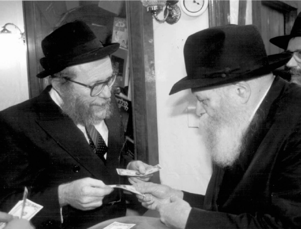

‘Do You Know What Russia Is?
We brought up the idea of going to Russia in order to print the Tanya but the Rebbe ignored our questions . * One time, when we brought Tanyas to the Rebbe and it seemed like a good time, R ’ Leibel Zajac asked once again about going to Russia. * The Rebbe negated this out of hand * Part 1
By Rabbi Shneur Zalman Chanin

DON’T GET THE EXISTING ORGANIZATIONS INVOLVED
The early 90’s were years when Ezras Achim flourished in Russia under the direction of the devoted Chassid and askan, R’ Moshe Slonim a”h. He was the one who arranged the trips of the shluchim from New York to areas all over Russia. He started doing this even before perestroika, when the communists ruled with an iron fist. He increased his activities ten-fold after the fall of communism.
To R’ Moshe’s credit let it be said that he was a man of action, one who took action himself and pressed others into action, and a brilliant scholar. He would turn over worlds, the main thing being that the Rebbe’s wishes be carried out. This is why we thought he was the best person for our plans of printing the Tanya throughout Russia. As we anticipated, R’ Moshe liked the idea and expressed his willingness to devote himself to this in order to give the Rebbe nachas. He said he would convey to the activists in Russia all the printing instructions that he would get from us.
We were sure that we were all set and the historic project of printing the Tanya throughout Russia would begin. But after a week or two we suddenly received the Rebbe’s response that we should print the Tanya ourselves without involving any organizations, and that we should not work with organizations that were already operating in Russia.
When we received this answer, we did not know what the Rebbe was referring to, as we hadn’t spoken to any organizations other than with R’ Moshe Slonim. Why would the Rebbe warn us about this?
It was only several months later that we found out that the Rebbe told someone that the reason for this was that, right after we spoke with R’ Moshe, the Rebbe received a letter from a certain chassid in Russia complaining, why wasn’t he given this Tanya printing project? So the Rebbe said not to get any existing organization involved.
THE REBBE DID NOT REACT
Months went by and the collapse of communism was well under way, and it seemed like a fait accompli. We very much wanted to print the Tanya throughout Russia and to make a big deal of it. We figured that Russia was a wonderful place to carry out the Rebbe’s instruction to print the Tanya wherever Jews lived, because there were hundreds of cities with Jewish communities that had never had a Tanya printed there.
Since the Rebbe had told us not to work with existing organizations, we had to find a reliable person who would want to do this and who would also have the technical knowledge of how to get the job done. We could not think of anyone who met these requirements and tried to contact people in Russia, but nothing panned out. It seemed that this project could not get off the ground.
The truth is that someone who was never in Russia, especially Russia of those days, cannot fully understand what it meant to print the Tanya in Russia and how difficult this was. I heard from my father about the severe shortages in Russia, from wool for weaving to flour for baking. I did not fully grasp what “there is none” meant, until I saw it for myself when I finally went to Russia to print the Tanya, as I will relate.
In the meantime, we contacted R’ Zev Wagner who lived in Moscow and had government connections. He promised to help and he was able to obtain printing permits for us for public places as well as other things.
At the end of Iyar 5751/1991, we were told that he had obtained permission from the leadership of the shul in Leningrad to print the Tanya in that city and its environs. Naturally, we immediately sent R’ Wagner’s letter to the Rebbe as well as the permits, but the Rebbe did not respond.
DO YOU REALIZE WHAT YOU’RE ASKING?
On Rosh Chodesh Sivan 5751, we wrote to the Rebbe that as a follow-up to the previous time that we gave the Rebbe 31 (lamed-alef) Tanyas, and the Rebbe had said it was an inyan of Hashem’s name Alef-Lamed which is strength and he blessed us that we start working with more strength and print additional Tanyas – now we wanted to inform the Rebbe that I had finished printing 62 Tanyas which was double E-l, and nearly all of them were bound already. We wrote to the Rebbe that some editions were missing, but in the meantime we would print several more Tanyas, so that in the end we would print more than double the 31 we had printed at first.
When the Rebbe received the Tanyas, we saw that he was pleased. He asked that next time we print more Tanyas.
After seeing how pleased the Rebbe was, my friend R’ Leibel Zajac wrote to the Rebbe that after seeing that nothing was happening with the printing of the Tanya in Russia, and since he very much wanted to carry out the Rebbe’s horaa and to print in Russia, therefore, he wanted to travel to Russia himself on condition that I join him. Together we would arrange for a mobile printing press and we would go from city to city to print the Tanya.
Once again, the Rebbe ignored this request. During those weeks, we brought new Tanyas to the Rebbe several times. Each time, when giving them to him, the Rebbe said that more Tanyas should be printed wherever possible.
One time, when giving the new Tanyas, R’ Leibel said to the Rebbe that we had already written about the idea to print dozens of Tanyas throughout Russia but we had not received a response.
The Rebbe made as though he did not hear what R’ Leibel said and gave us his brachos for the Tanyas we had brought. Once again, he urged us to print more, but he did not respond to the idea of printing Tanyas in Russia.
One time, we brought the Rebbe an entire bookcase of Tanyas on wheels. There were more than 100 editions of new Tanyas and we had built a nice bookcase to contain them all. On it was a map with all the places where the Tanyas had been printed.
When the Rebbe saw the mobile bookcase his face lit up. He smiled broadly. When R’ Leibel saw that in k’dusha there is significance in numbers, and the more Tanyas there were, the more nachas the Rebbe had, he wanted to ask: Perhaps the time has come for us to travel to Russia to print the Tanya?
We were alone in Gan Eden HaTachton and R’ Leibel got up the nerve to say: Since, up until now, he had not received a response to his idea of going to Russia to print the Tanya, he wanted to take this opportunity to ask: Perhaps the time had come?
Suddenly, the Rebbe’s smile disappeared. He looked frighteningly somber and he said to R’ Leibel, “Do you know what Russia is? There is nothing there, no paper, no ink, not a glass or a plate, so of course there is no printing press. How do you want to print Tanyas there?”
Leibel said, “We will bring one from here.”
The Rebbe said, “Do you hear what you’re saying? You will go to Russia with a printing press, with paper, with ink, with a generator, etc. Do you think that they will meet you and welcome you at the Foreign Office with diplomatic protocol?
“Do you know who will welcome you? Policemen will welcome you and the first thing they will do will be to confiscate everything, then they will arrest you for bringing propaganda into Russia. It will take six months until we find out where you are and another six months to extricate you. And for this you want to go there?
“And what about the anguish of the families? Do you hear what you’re saying?”
There was silence in the room for a few moments. Then the Rebbe smiled broadly and took the Tanyas and went into his room.
Leibel did not expect such a reprimand. He knew that Russia had been a communist country, but he thought that after perestroika it had become a free and democratic country.
Obviously, after such a response, we dropped the idea. Until one day, when we received a surprising horaa from the Rebbe. But that’s for the next article.
Beis Moshiach (staff). "‘Do You Know What Russia Is?." Beis Moshiach, no. 894 (August 22, 2013).